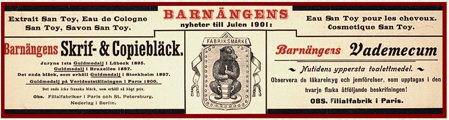
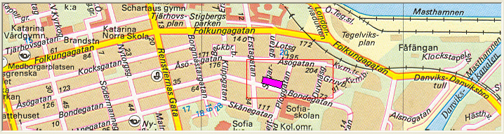
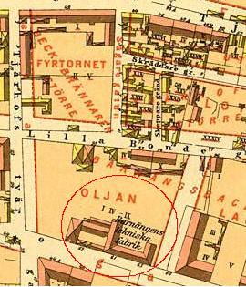
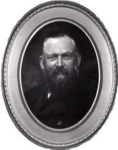

Södermalm i tid och rum. Stockholm
Söder i våra hjärtan

{kind=link}
{kind=link}
{kind=link}

| Ur En bok om Söder, Per Anders Fogelström, 1953 Bondegatan hörde liksom Skånegatan (tidigare: Nya gatan) till de gator som tillkommit"efter (tull-) staketets utflyttning". Vid denna gata som möjligen fått namn efterbondekvarteren nära Vintertullen (och en tid hette Reenfeldtsgatan efter enkrigskommissarie som hade en gård intill) låg en stor malmgård, den Tottieska.Charles Tottie, vars far inflyttat från England, ägde hus och drev grosshandel i kvarteret Bachus vidSkeppsbron. 1759 inköpte han en gård på Söder som han snart tyckte var väl liten och obekväm. Tottie var en rik man och kunde kosta på sej att bygga ordentligt, det blev en ståtligmalmgård som den gamle murmästaren Wilhelm Friese fick skissera upp åt honom. Också parkenomdanades - ruddammar och orangeri, persikohus och drivbänkar, pomeransträd, valnötsträd,myrten, lager ... |  1885 |
 | Fjorton år efter köpet kan herr Tottie med maka flytta in och då bestämmer de attgården ska bli ett fidekommiss. Efter föräldrarnas död inflyttar sonen Anders men han dör barnlösoch närmaste arvsberättigade släkting är landsortsbo och har ingen lust att överta den vackramalmgården med dess dyrbara inredning och väldiga målningar infällda i väggarna.Väverier och industrier flyttade in, ingen vårdade de många vackra detaljer som Tottie och hanskonstnärliga medarbetare lekt fram. Inte förrän Johan Wilhelm Holmström kom hit (1868) ochbörjade tillverka bläck, blanksvärta och Eau de Cologne. De första åren bedrevs arbetet vidBarnängens Tekniska Fabrik under mycket primitiva förhållanden. All tillverkning skedde förhand, alla varor till affärer, båtar och tåg transporterades på en enda dragkärra. Tandpastangjordes av snäckskal som inköptes säckvis och maldes i mortlar och siktades. Holmström beskrivssom en sträng men god och glad patriark. Han var musikalisk, förtjust i fiske, jakt och segling.Jaktintresset blev anledning till att fabriken fick en mortelstötande björn i varumärket - och medförde också att det växte upp en liten zoologisk trädgård i parken vid Bondegatan. Levande björna, rävar, påfåglar, örnar, falkar ... |
| Den första björnen fick en särskilt flott bur med badrum ochsängkammare - men blev trots komforten så vildsint att han måste skjutas. En ny björn kom frånRyssland, en tredje inköptes av en kringresande italienare. Men då satt den första redanuppstoppad och reklamerade för fabrikens varor i företagsbutiken vid Västerlånggatan. Runtomkring björnen varorna med de vackra namnen: Odaline ("för bibehållandeav hudens mjukhet"), Konvaljeparfym ("beredd av svenska Liljekonvaljblommor, vilka i välluktöverträffa utlandets"), Stolen Kisses, Aromatisk Amykos-tandpasta, Savon Royal (tvål medkungligt vapen), New Mown Hay Soup, Salongsbläck ("lämpar sig bäst för damernas korrespondens"), Eau de Cologne pour la Noblesse du publique musical (med foto av Christina Nilsson) ...
1930 flyttade Barnängens Tekniska Fabrik till Alvik - och tog namnet med sej. Några år senareflyttade en del av,den gamla Tottieska malmgården till Skansen. Resten revs och gav plats förmoderna och helt vanliga bostadskvarter. |
  Barnängens Tekniska Fabrik AB sedd norrifrån. Gatan i nederkanten är nuv Åsögatan, tidigare Lilla Bondegatan. Barnängens Tekniska Fabrik AB sedd norrifrån. Gatan i nederkanten är nuv Åsögatan, tidigare Lilla Bondegatan. |